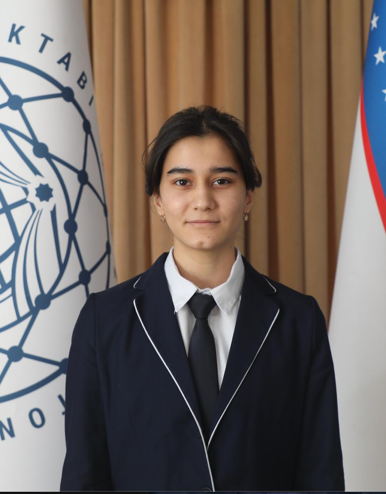
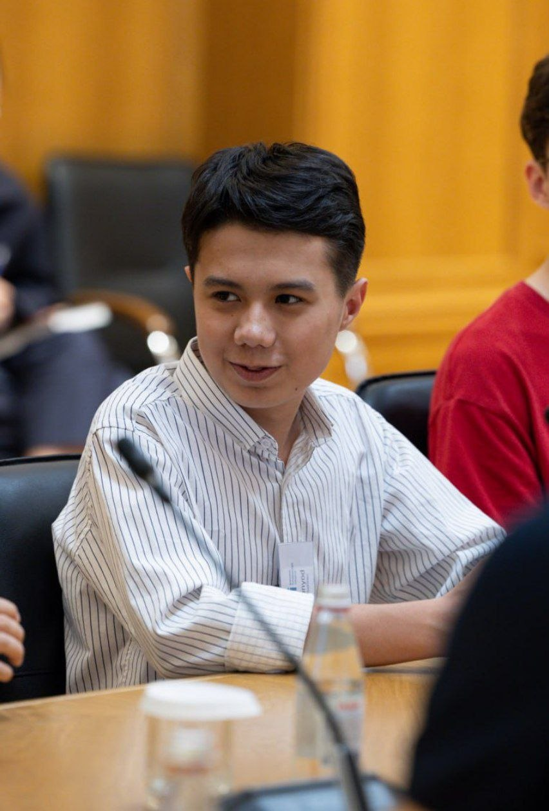

Shakhriniso Kholboeva
Founder & Director
Presidential School in Karshi, Uzbekistan
Inaugural Competition · 2026
A free economics essay competition for high-school students exploring the economic questions shaping Central Asia.
Open worldwide · Central Asian focus required · Ages 14–19 · Maximum 1,200 words · English · Free entry
2026 submissions are now closed.Preliminary Review Completed — Final Judging in Progress
2026 Competition Update
CAEP 2026 received 182 submissions. After the review process, just 12 essays advanced to the Final Round — placing them among the top 6.6% of all entries.
Shortlisted participants have been contacted directly and will now be evaluated by the CAEP Final Judging Panel.
Preliminary Review Completed — Final Judging in Progress01 — About
The Central Asia Economics Prize is a free economics essay competition for high-school students aged 14–19.
Students from any country may participate, but all essays must directly engage with the economic context of Central Asia. Participants choose one of four economics questions and submit an individual essay of no more than 1,200 words in English.
The competition encourages students to develop evidence-based arguments, engage with competing perspectives, and apply economic reasoning to real problems.
Organizing Team
The organizing team founded and runs the Central Asia Economics Prize. It is separate from the preliminary reviewers and final judging panel.

Founder & Director
Presidential School in Karshi, Uzbekistan

Co-Founder & Academic Lead
Presidential School in Karshi, Uzbekistan
Co-Founder & Operations Lead
Presidential School in Samarkand, Uzbekistan
Graphic Designer
Presidential School in Samarkand, Uzbekistan
02 — Competition
The competition is open to high-school students aged 14–19 at the submission deadline. Students from any country may participate, but every essay must directly engage with Central Asia.
Central Asia primarily includes Kazakhstan, Kyrgyzstan, Tajikistan, Turkmenistan, and Uzbekistan. Students are not required to discuss all five countries.
03 — Questions
Choose one of the four official categories and answer its question. Each invites careful economic reasoning, credible evidence, and an independent response grounded in Central Asia.
04 — Full rules
05 — Judging
Essays are anonymized for review. Preliminary review has concluded, and the 12 shortlisted essays are now in the Final Round for independent evaluation by the final judging panel.
Assessment principles
Strong essays will not simply describe an economic issue. They should develop a clear argument, use relevant evidence, engage seriously with competing explanations or counterarguments, and reach a well-supported conclusion.
CAEP 2026
The independent final judging panel is evaluating the essays that advanced from preliminary review.
06 — Awards
Outstanding participants may receive opportunities for publication, academic recognition, and further engagement with economists and researchers.
07 — Publication
CAEP intends to publish selected outstanding essays through an official digital collection of winning work.
Selected essays may also be recommended to external publications for independent editorial consideration where opportunities are confirmed.
08 — Academic connections
One objective of CAEP is to help promising students interact with the wider economics community.
Where possible, outstanding participants may be introduced to academics or policy professionals whose work relates to their interests. This may lead to discussion, feedback, reading recommendations, guidance on future writing, or potential future collaboration.
09 — 2026 Timeline
Final judging in progress
10 — Results
Shortlisted participants have been contacted directly. Final results will be announced after the conclusion of the judging process.
12 shortlisted essays
After final judging
After final judging
Publication links will follow the results
11 — Submission
Submissions for the inaugural Central Asia Economics Prize 2026 closed on 24 September 2026 at 23:59 Uzbekistan Time (UTC+5). The four 2026 essay questions remain available above as part of the competition record.
12 — FAQ
13 — Contact
Questions about eligibility, submissions, judging, or competition rules are welcome.